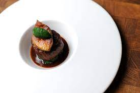

Beef Filets with Foie-Gras and Truffles

Description
Composer Gioacchino Rossini (1792-1868) was a noted gourmand, and dishes with his name attached typically involve foie-gras and truffles. This one was served in his honor at the "Cafe Anglais" in Paris.
Ingredients
- 3 tbsp. clarified butter
- 4 (1/2''-thick) slices baguette
- 4 oz. fresh foie-gras, cut into 2'' rounds about 1/2'' thick
- Salt and freshly ground black pepper
- 4 (6-oz.) beef filets, at room temperature
- 1⁄2 cup madeira
- 2 cups rich veal stock or beef stock
- 6 oz. demi-glace
- 8 tbsp. butter, cut into pieces
- 1 (1-oz.) black truffle, thinly sliced
Steps
- Preheat oven to 200°. Heat clarified butter in a nonstick skillet over medium heat. Add bread slices and fry until golden, about 30 seconds per side. Transfer croutons to a platter and keep warm in oven.
- Wipe skillet out with paper towels and return to high heat. Season foie gras to taste with salt and pepper, then sear until browned, about 30 seconds on each side. Keep warm in oven with croutons.
- Return skillet to medium-high heat. Season filets to taste with salt and pepper. Add to skillet and cook until well browned, about 5 minutes per side for medium rare. Transfer filets to platter with croutons and foie gras to keep warm..
- Return skillet to medium-high heat, add madeira, and cook until alcohol has evaporated and reduced slightly, about 2 minutes. Add stock and demi-glace, increase heat to high, and cook until liquid is reduced by three-quarters and slightly syrupy, about 15 minutes. Add butter, a few pieces at a time, swirling skillet over heat until butter is melted and sauce is velvety, about 2 minutes more.
- To serve, place each crouton on a warm dinner plate. Place filets on top of croutons, center 1 piece of foie gras on each filet, arrange 3-4 truffle slices on each piece of foie gras, then spoon sauce over the top. Garnish each with a sprig of parsley, if you like.